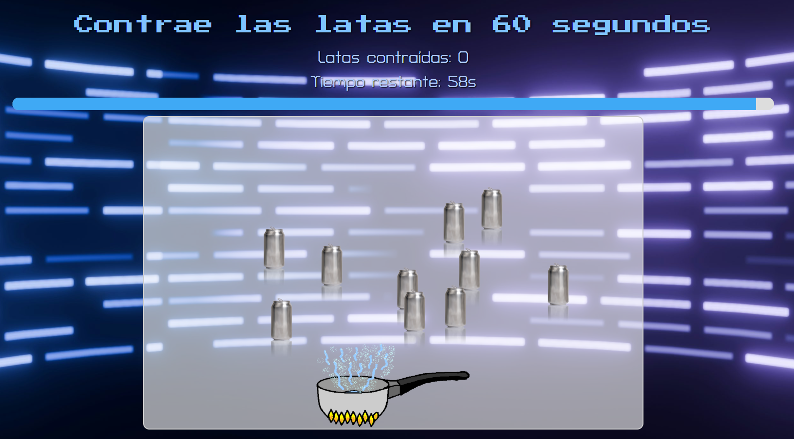

1. Análisis de resultado y reflexión de la encuesta aplicada a los alumnos.
2. Colecta de latas (se hace énfasis en que no se trata de consumir bebidas en latas de aluminio, sino de recoger aquellas latas que se encuentran tiradas o bien la que ellos separan de la basura que se genera en su casa).
3. Se realizará un informe, donde se den a conocer los resultados: kilos de latas, remuneración económica, propuestas para inversión de recursos de acuerdo a las necesidades que los alumnos detectan en las aulas de matemáticas.
La lata de conservas fue patentada en 1810 por Peter Durand, un inventor inglés. Como no estaba vinculado con la producción de alimentos Durand vendió su patente a Bryan Donkin y John Hall, estos iniciaron la fabricación comercial de enlatados alrededor de 1813 envasando alimentos para la Armada Británica. Fue así como se inventaron las conocidas latas de aluminio.
La producción de este metal consume mucha energía, lo que puede contribuir a la emisión de gases de efecto invernadero y al cambio climático. Además, la extracción de bauxita, el mineral del cual se obtiene el aluminio, puede causar deforestación y pérdida de hábitat.
Otro impacto negativo del aluminio en el medio ambiente es su disposición final ya que puede tardar cientos de años en degradarse y liberar sustancias tóxicas al medio ambiente. Por esta razón es tan importance hacer reciclaje del aluminio, porque es una forma efectiva de reducir su impacto en el medio ambiente, ahorrar energía y mejorar la economía a través de fuentes de empleo.
En el CBTIS 118, se organizó una colecta de latas de aluminio para fomentarles a los estudiantes en donde se deben de desechar correctamente, como las pueden separar de una buena forma y el como reutilizarlas para no solo tirarlas.
Además de la colecta, se realizó un formulario para conocer si los alumnos de la escuela están enterados de como se clasifican los distintos tipos de basura en los botes correspondientes, si practican la separación de residuos, etc.
En concreto, la recolección de latas en el plantel fue todo un exito, al obtener la suma de 1980 kg. de latas recojidas por la mayoria de los estudiantes.
¿Quieres aprender más acerca de los cambios que puede sufrir una lata? ¡Da clic aquí!
